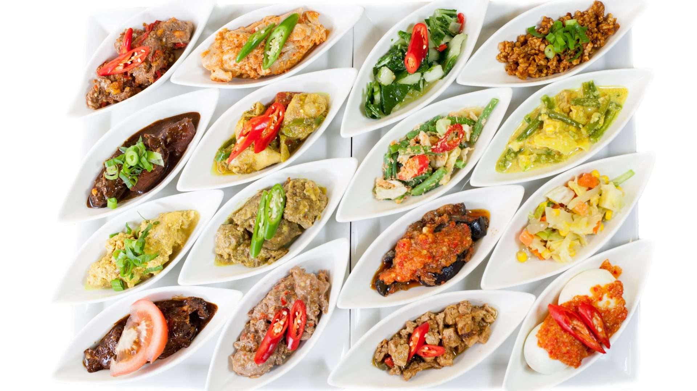
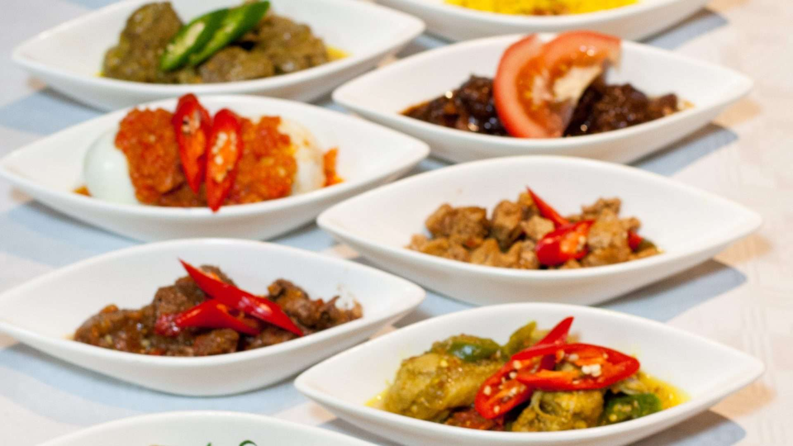

Minahasa
€ 39,5018 gerechten
De beroemde rijsttafel van Tujuh Maret met alle specialiteiten van onze chef, waaronder kipsaté, gele rijst, pandanrijst, zoetzure salade en kroepoek.

30jaar Indonesische
specialiteiten
Authentiek en pittig, uit het noorden van Sulawesi. Met saté van de houtskoolgrill en een uitgebreide rijsttafel, in de Utrechtsestraat in Amsterdam.
Elke dag open van 14:00 tot 22:00
Wij staan voor authentiek, en dus voor heet gekruide gerechten uit het noorden van Sulawesi, waar de saté op houtskool wordt gegrild.
De gerechten worden zo authentiek mogelijk geserveerd. Restaurant en traiteur hebben een uitgebreid assortiment voorgerechten, vis-, kip-, vlees- en bijgerechten. Vooral met de saté en de uitgebreide rijsttafel onderscheiden we ons. Tot snel!

Het visitekaartje van het huis. Vanaf twee personen, prijs per persoon.
18 gerechten
De beroemde rijsttafel van Tujuh Maret met alle specialiteiten van onze chef, waaronder kipsaté, gele rijst, pandanrijst, zoetzure salade en kroepoek.
12 gerechten
Indonesisch feestbord met onder meer kip, rundvlees, groenten, zoetzure salade, kroepoek en gele rijst.
12 gerechten
De vegetarische rijsttafel met onder meer tahoesaté, gele en witte rijst, zoetzure salade en vegetarische chips.
Schuif aan voor een rijsttafel of een paar stokjes saté. Bel ons om een tafel te reserveren, of stuur een bericht. We zijn elke dag open van 14:00 tot 22:00.
Bel 020 - 427 98 65